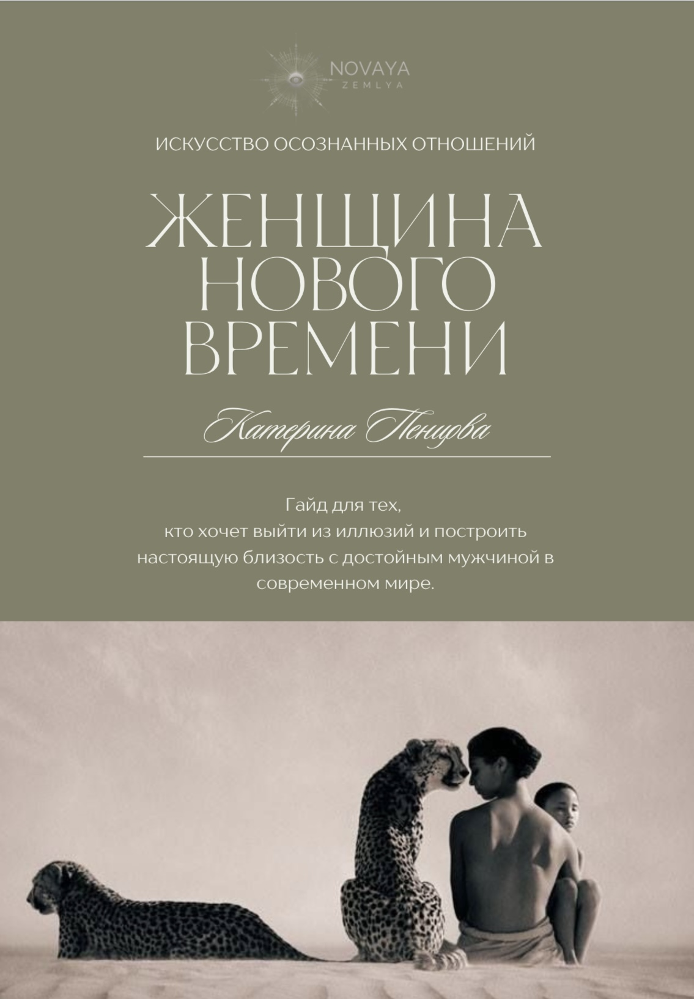

О проекте
«Новая Земля» — это пространство, в котором каждый может прикоснуться к подлинному, выйти за рамки шаблонного мышления и начать видеть глубже. Мы создаём среду, в которой важно быть, а не казаться, где ценится глубина, честность и стремление к внутренней свободе.
Проект родился из желания объединить людей, которые стремятся к развитию, пробуждению и осознанному выбору во всех сферах жизни. Здесь вы найдёте не только вдохновение, но и практичные инструменты для личной трансформации.
О гайде
Гайд «Женщина Нового Времени» — это результат глубоких наблюдений, личных озарений и изучения десятков научных источников. Он помогает выстроить внутреннюю опору и отказаться от иллюзий, навязанных обществом, медиа, а также женскими тренингами.
Внутри вы найдёте практики для самопознания, и конкретные шаги к построению осознанных отношений и выхода из шаблонных сценариев.
Это не просто размышления — это структурированный опыт, способный изменить ваше восприятие и качество жизни.
Обо мне
Приветствую! Меня зовут Катя, и я — проводник в мир внутренней трансформации и осознанного отношения к жизни. Мой путь — это постоянное саморазвитие, изучение себя и окружающего мира через призму психологии, социологии и современных тенденций. Я являюсь проводником трансформационной игры «Лила» и создательницей проекта «Новая Земля», который помогает людям переосмысливать мышление и открывать новые горизонты сознания.
Этот гайд является результатом моих глубоких размышлений и основывается на широком круге исследований в таких дисциплинах, как психология, социология, антропология и эволюционная биология, что позволяет создать многослойное и обоснованное понимание человеческих отношений, личностного роста и динамики взаимодействий. Я не претендую на истину в последней инстанции, но надеюсь, что мои мысли и наблюдения будут полезны тем, кто ищет свой путь к гармоничным и осознанным отношениям.